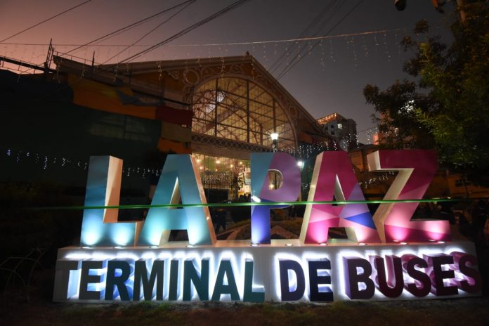

Examen de Jhonatan Mateo Quispe Lecoña

LA PAZ
La Septima Maravilla del Mundo
BIENVENIDOS A LA PAZ
Aqui encontraras toda la informacion sobre la ciudad de La Paz, su historia, personajes importantes, platos tipicos y danzas tradicionales. Espero que te guste y disfrutes de esta maravillosa ciudad.
Con el paso de los siglos, La Paz se ha consolidado como el centro político y administrativo de Bolivia, albergando la Sede de Gobierno. Hoy en día, es una metrópoli vibrante que maravilla al mundo entero al combinar perfectamente su rica herencia indígena y colonial con la modernidad de sus imponentes teleféricos y su desarrollo urban
Datos curiosos sobre La Paz:La Paz es la ciudad más alta del mundo, situada a una altitud de aproximadamente 3.650 metros sobre el nivel del mar. Además, su sistema de teleféricos, conocido como Mi Teleférico, es uno de los más extensos y modernos del mundo, ofreciendo vistas panorámicas impresionantes de la ciudad y sus alrededores.
